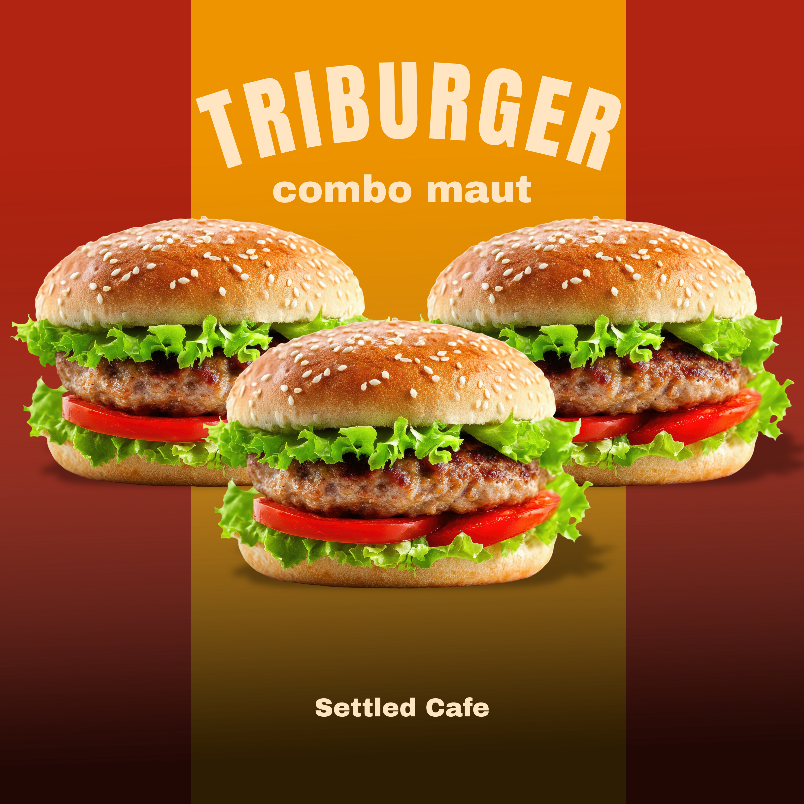
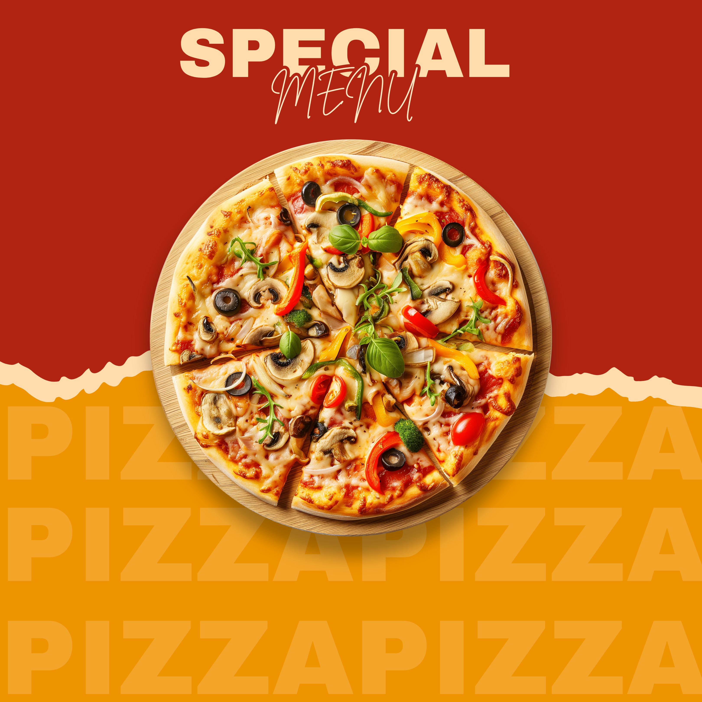
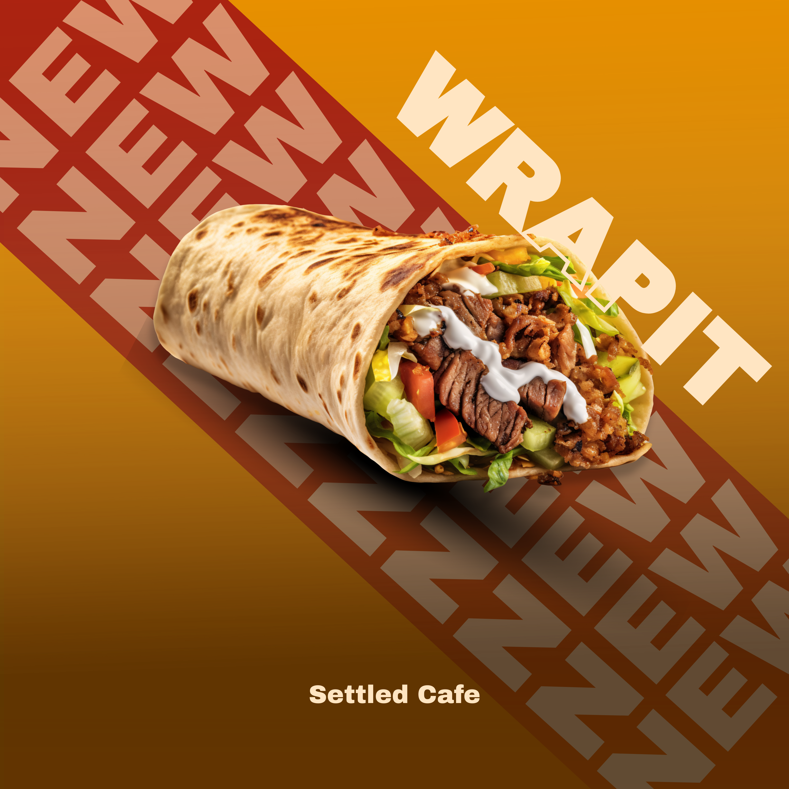
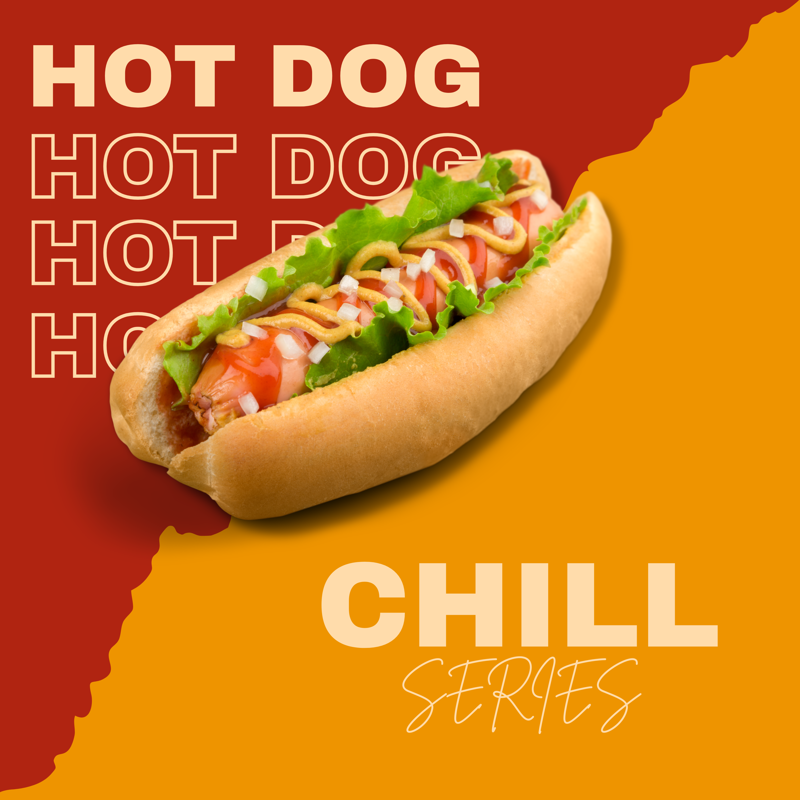
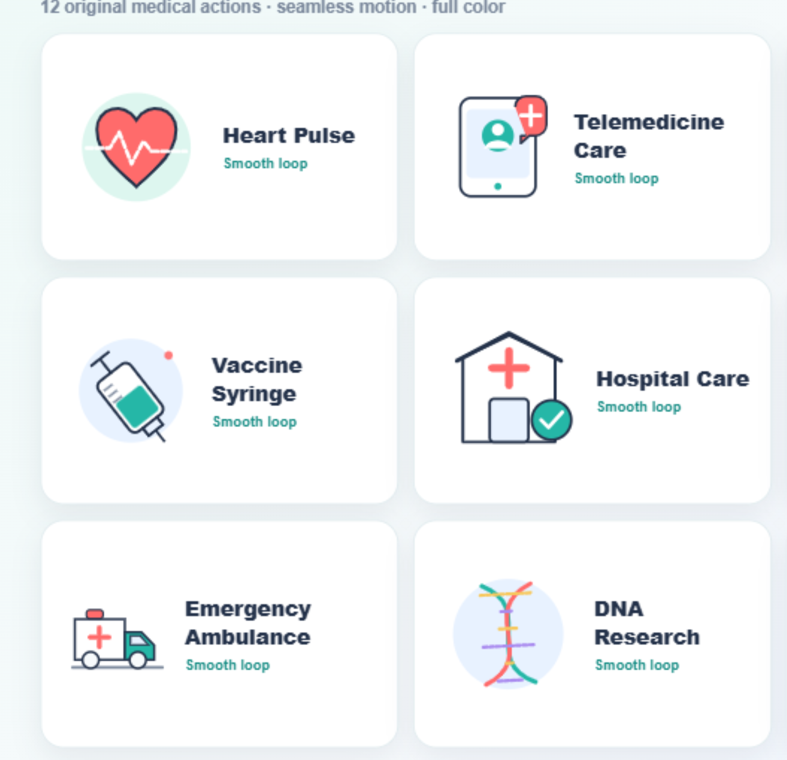

♡ ○ △ ⌑
settled.cafe Desain feed Instagram
INSTAGRAM FEED DESIGN



Saya Muhammad Syamsul Muarif, graphic & motion designer yang fokus mengembangkan visual untuk social media, animated icons, motion graphics, iklan produk, dan produk digital.
Saya menikmati proses mengubah ide menjadi desain yang jelas, menarik, dan mudah digunakan—mulai dari konsep, eksplorasi visual, animasi, hingga final delivery.
Graphic design, logo, social media, animated icons, dan motion graphics.
Vector assets untuk Shutterstock, Adobe Stock, dan Freepik.
Graphic Design · Social Media · Motion Graphics · Animated Icons · Creative Web
Kumpulan proyek pilihan lintas branding, social media, animated icons, microstock, hingga eksperimen visual berbasis web.

settled.cafe Desain feed Instagram




Dari static pixel hingga frame yang bergerak—dipilih dan dirancang sesuai tujuan.
Campaign visual, content system, layout, art direction
↗Explainers, looping animation, transitions, Remotion
↗Animated icons, illustration sets, microstock assets
↗Portfolio sites, motion direction, visual prototyping
↗Sistem visual yang konsisten, fleksibel, dan punya karakter kuat untuk brand atau produk.
Motion yang purposeful untuk menjelaskan, memperkuat, dan membuat brand lebih memorable.
Template dan aset visual yang rapi, reusable, dan efisien untuk kebutuhan konten rutin.
Tujuan, konteks, audience
Konsep & visual direction
Eksekusi & refinement
Final files, siap digunakan
Animated icon systems, Remotion experiments, SaaS visuals, and creative web portfolio projects.
Producing commercial vector collections for Shutterstock, Adobe Stock, and Freepik marketplaces.
Campaign and feed design for F&B, travel, educational, and lifestyle content.